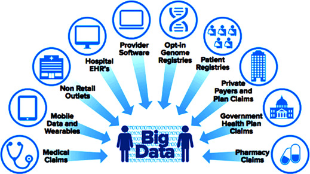
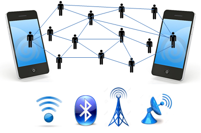
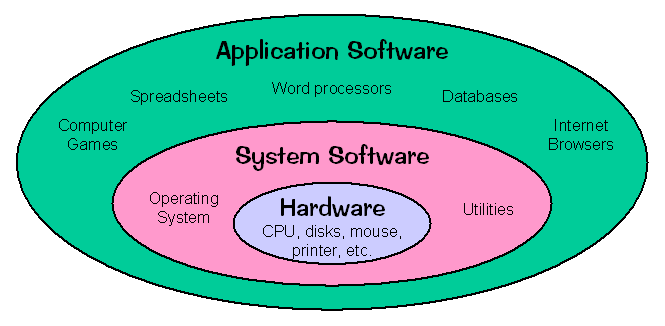
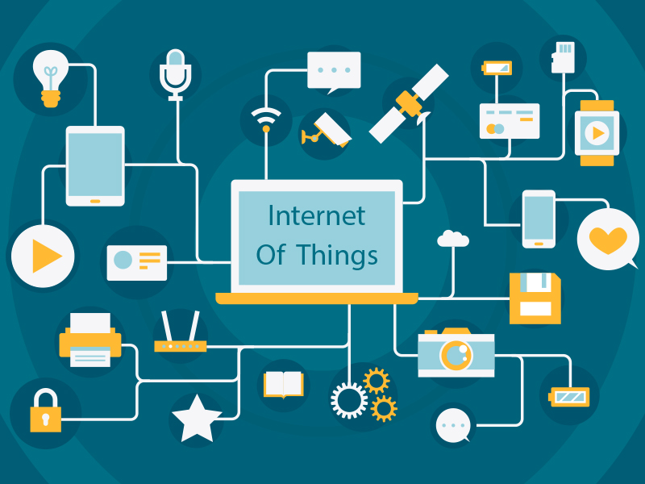

Big Data
What is Big Data?
The quantities, characters, or symbols on which operations are performed by a computer,
which may be stored and transmitted in the form of electrical signals and recorded on magnetic, optical, or mechanical recording media.
Now, let's learn Big Data introduction.

*REAL WORLD BIG DATA EXAMPLES
-Discovering consumer shopping habits
-Personalized marketing
-Fuel optimization tools for the transportation industry
-Monitoring health conditions through data from wearables
-Live road mapping for autonomous vehicles
-Streamlined media streaming
-Predictive inventory ordering
-Personalized health plans for cancer patients
-Real-time data monitoring and cybersecurity protocols
Big Data
Artificial intelligence
Artificial intelligence (AI) is intelligence demonstrated by machines, unlike the natural intelligence displayed by humans and animals, which involves consciousness and emotionality. The distinction between the former and the latter categories is often revealed by the acronym chosen. 'Strong' AI is usually labelled as artificial general intelligence (AGI) while attempts to emulate 'natural' intelligence have been called artificial biological intelligence (ABI). Leading AI textbooks define the field as the study of "intelligent agents": any device that perceives its environment and takes actions that maximize its chance of achieving its goals.[3] Colloquially, the term "artificial intelligence" is often used to describe machines that mimic
"cognitive" functions that humans associate with the human mind, such as "learning" and "problem solving".
 Artificial intelligence
Artificial intelligence
Database
A database is an organized collection of data, generally stored and accessed electronically from a computer system. Where databases are more complex they are often developed using formal design and modeling techniques.
The database management system (DBMS) is the software that interacts with end users, applications, and the database itself to capture and analyze the data. The DBMS software additionally encompasses the core facilities provided to administer the database. The sum total of the database, the DBMS and the associated applications can be referred to as a "database system". Often the term "database" is also used to loosely refer to any of the DBMS,
the database system or an application associated with the database.

Database Applications :
Telecom
Sales
Airlines
Education sector
Online shopping
Database
Mobile Computing
Mobile computing is human–computer interaction in which a computer is expected to be transported during normal usage,
which allows for the transmission of data, voice, and video. Mobile computing involves mobile communication,
mobile hardware, and mobile software. Communication issues include ad hoc networks and infrastructure networks as well as communication properties, protocols, data formats, and concrete technologies. Hardware includes mobile devices or device components.
Mobile software deals with the characteristics and requirements of mobile applications.

Mobile Computing
operating system
An Operating System (OS) is an interface between a computer user and computer hardware. An operating system is a software which performs all the basic tasks like file management, memory management, process management, handling input and output,
and controlling peripheral devices such as disk drives and printers.

operating system
Internet of things
An Operating System (OS) is an interface between a computer user and computer hardware. An operating system is a software which performs all the basic tasks like file management, memory management, process management, handling input and output,
and controlling peripheral devices such as disk drives and printers.

Internet of things